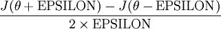

A Short Note on Gradients
Most of us use frameworks like TensorFlow and PyTorch to build and train machine learning models. Such frameworks allow us to focus on important things (i.e the architecure of the model) and let it do the rest of the work. Calculating gradients of the parameters is an example of the redundant work they do for us. Although these frameworks calculate gradients for us, it is always a good idea to know about various properties of them, and how they behave in different circumstances.
Let's say you know how to calculate gradients manually and you are implementing a deep neural network from scratch. When we calculate the gradients manually, its always a good idea to know whether they are correct or not. We can perform gradient checking to see how much accurate the computed gradients are. We use following formula to numerically approximate the derivative at a particular point \(\theta\).
Here, EPSILON is a small constant(i.e \(10^{-4}\)). We can compare this value with the value computed by the function which we use for gradient calculation. Next, we will discuss how extreme value of gradients causes various problems in neural networks.
Dead Units in ReLU
Currently, very popular choice for non-linearity is ReLU, which stands for rectified linear unit [\(F(x)\) = \(max(0,x)\)] In ReLU, neuron fires when the input is greater than 0. Otherwise, it will be zero. Sometimes, a large gradients flowing through the neuron (with ReLU) could cause weight update in such a way that the neuron will never activate again. That is, every gradients flowing through that neuron will be zero. Such neurons are called "Dead Units/Neurons". Important thing to note here is that once a neuron ends up in this state, it's unlikely to recover. The reason is, the function gradient at 0 is also 0. The most probable reason behind this problem is [very high learning rate]. So, try decreasing the learning rate first when you face this problem. Another possible way to address this issue is by setting a small positive gradient for negative inputs. This type of units are called "Leaky ReLU".
Saturated Sigmoid Units
One common problem with sigmoid unit is vanishing and exploding gradients. Vanishing gradient problem occurs when even large changes in parameters of early layers do not make any difference in the output of the network. That is, the gradients of the network's output with respect to the parameters of early layers of a network becomes very small. This results in no learning in early layers. Similarly, exploding gradients is the case when these gradients are too large. One possible solution for exploding gradient problem is the gradient clipping[link]. In case of vanishing gradient problem, the reason can be weight initialization especially when you are using sigmoid or tanh as a non-linearity. An improper weight initialization may cause neurons saturate and ultimately stop the learning.
One of the top highlights on Medium is from the post of Andrej Karpathy, which is as follows: if you’re using sigmoids or tanh non-linearities in your network and you understand backpropagation you should always be nervous about making sure that the initialization doesn’t cause them to be fully saturated.
So, make sure you carefully initialize the weights of the network and use ReLU or similar non-linearities.
Another property of the gradient, when using sigmoid, is that it achieves a maximum at 0.25. Please note that we are referring to the local gradient of the sigmoid function which is [z(1-z)]. Here, we achieve maximum when z=0.5. As we know, local gradient will be multiplied by the gradient recieved from previous layer to calculate the final gradient at this neuron. In other words, every time a gradinet signal flows through a sigmoid unit its magnitude will be reduced by 0.25.
We saw various properties and effects of gradients on our learning system. Knowledge of such properties helps us better understand the internals of the learning system and it may help in debugging as well.